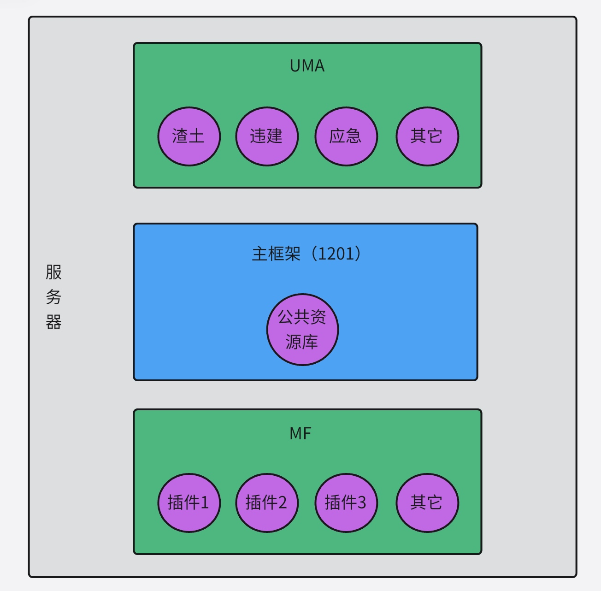
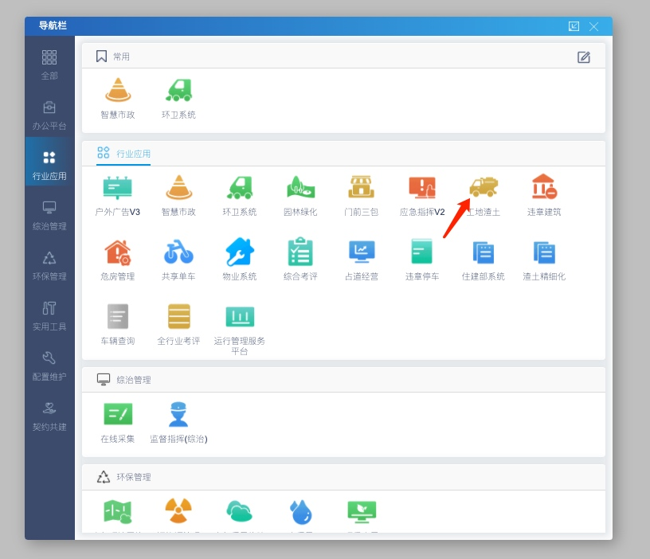
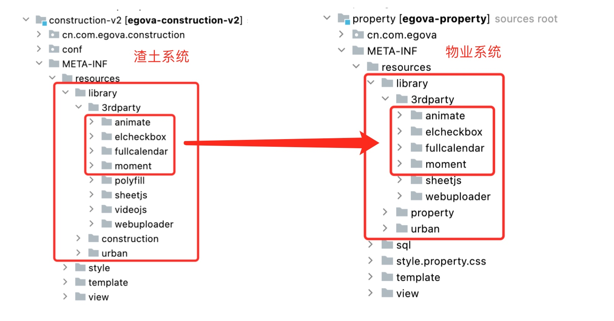
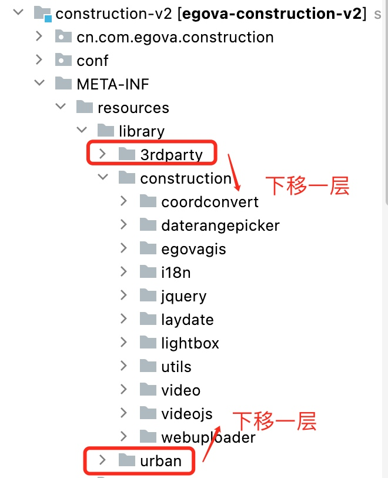
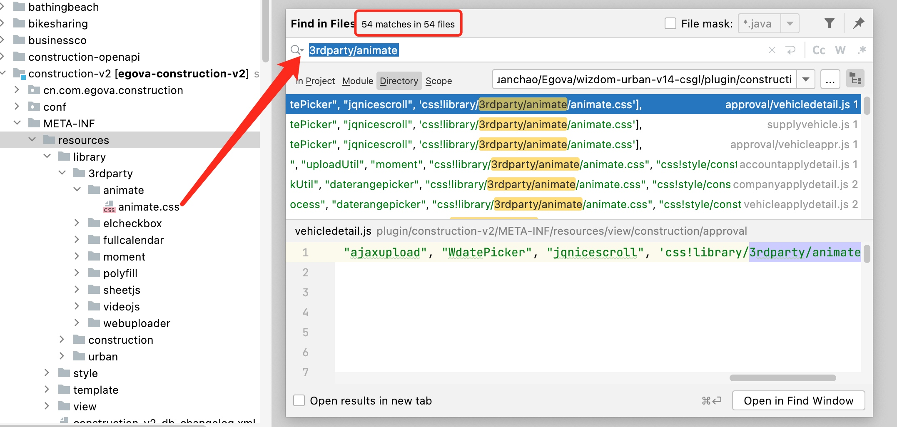
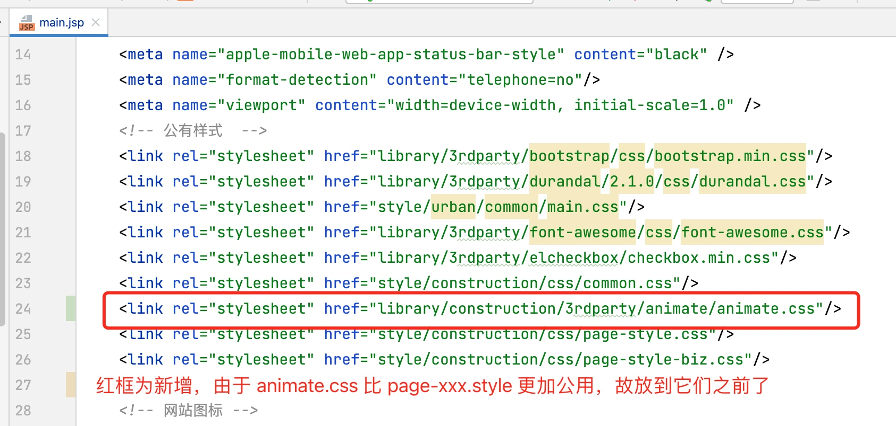
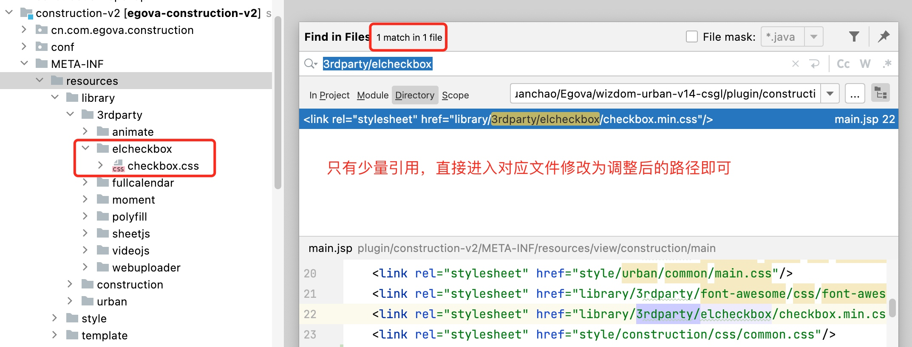
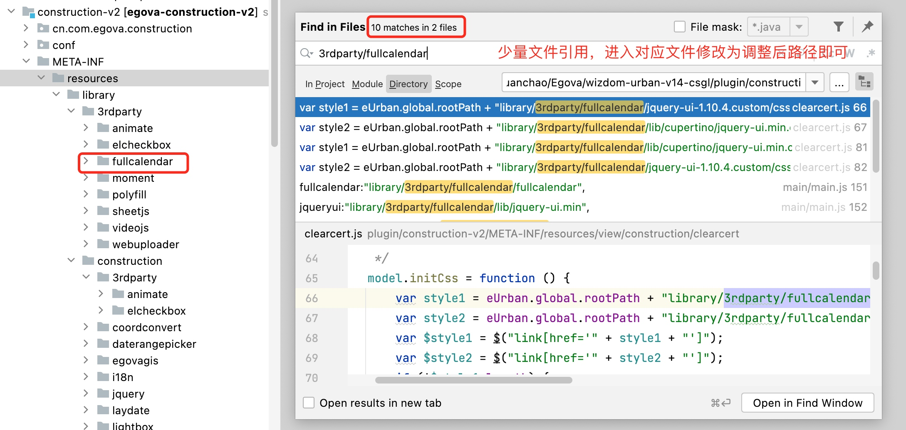
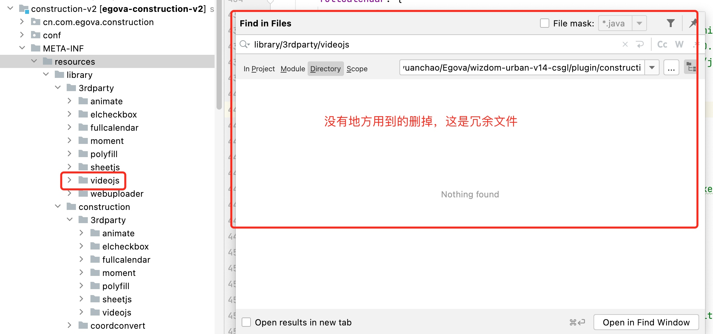

智信云框架拆分之前端转发路径冲突问题分析及解决
2023/01/10
posted in
数字政通
2023/01/10
posted in
数字政通
公司最近在做智信云框架拆分，要求将各个部门的V14插件的独立的依赖资源通过lua脚本进行配置转发路径，以便从主框架(比如eUrbanMIS1201)跳转到部门子系统(如渣土系统)时，保持BaseURL保持一致，不会出现404找不到资源的问题。

如下图所示，当从主框架的导航页面，点击某个子系统图标进行跳转时，以渣土系统为例，跳转地址应该为：http://123.56.170.103:8080/eUrbanMIS1201/construction.htm 但是拆分后，主框架1201上不一定还有子系统插件（并且即使还有，那访问的也不是UMA上的渣土系统），如果主框架服务中确实没有部署渣土包，那么就会报错，所以中台提供的方案是配置转发路径，即虽然我访问的是1201的construction.htm，但是会转发到UMA服务上去，这样打开的就是UMA服务上的渣土系统。
主框架和各部门业务系统之间如何共享Session，实现一处登录处处登录，这里不做讨论。

配置转发路径确实能解决子系统跳转问题。 但是随之而来的是转发路径冲突的问题。这与前期很多插件相互Copy有很大的关系。比如，渣土系统与物业系统的依赖库对比：

当我们配置转发路径：library/3rdparty/animate 时，到底是要请求哪个子系统下的animate库呢？这就是转发路径冲突。这两个系统还只是部门内部的冲突，实际上还存在部门之间的冲突，即不同部门的子系统，配置了相同的转发路径。
通过与其它部门同事沟通，目前这个问题没法通过配置批量解决。只能让转发路径差异化，从而避免冲突。也就是说，对于 3rdparty、urban 等目录下的前端资源，要给各个子系统人为包裹一层目录以作区分。
主要是 library 中没有包含子系统名称的资源目录。比如：library/3rdparty、library/urban 等。另外 style 目录下也需要关注一下，如果有这样的情况也需要加一层目录。
没有固定的规则，只需要依赖路劲中包含子系统名称即可，同时将所有依赖了该资源的前端文件全部同步修改。这个工作量非常大，而且容易遗漏，所以要千万小心！这里以渣土系统为例，建议如下修改：

调整前：library/3rdparty/animate/animate.css
调整后：library/construction/3rdparty/animate/animate.css
这个工作量肯定会非常大，因为会有无数个文件的依赖需要修改。不过同样是修改，也可以灵活进行。
依赖该资源的文件非常多的可以提升到 main.jsp 中。
比如这个 animate.css 有54个文件依赖了，那么可以将调整后的路径放到 main.jsp 中，同时检索出来的文件中删除原依赖路径。

main.jsp 修改如下：

少量文件依赖的调整js库的路径后，全局检索替换即可


排查过程中发现没有地方使用到的文件或目录，直接删掉。这是前期开发人员Copy代码时不注意导致的冗余文件。
